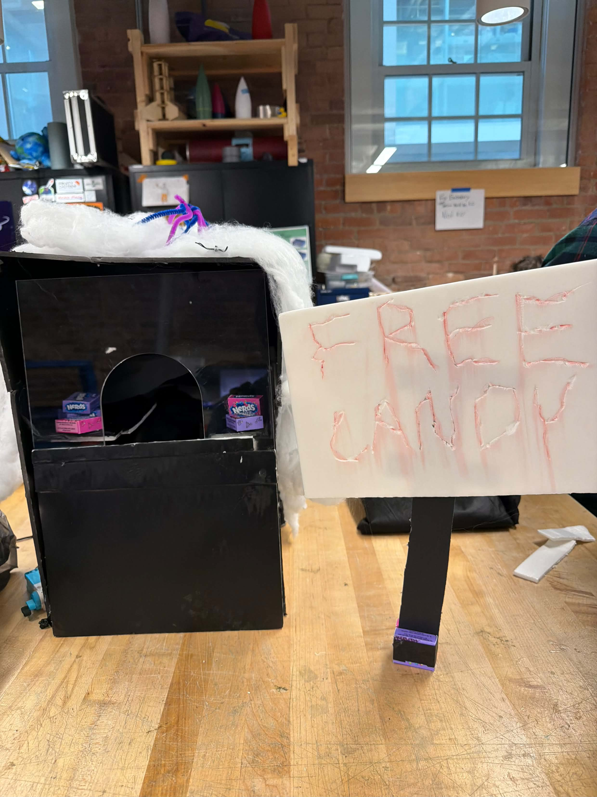
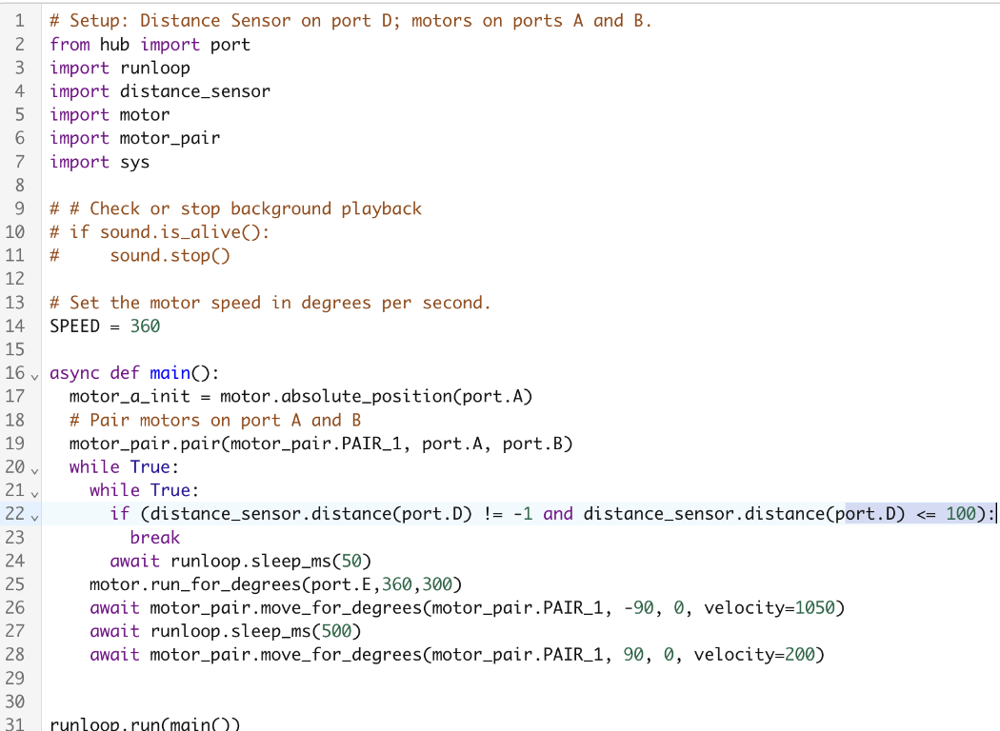

In this project, we were tasked to create a device for a haunted house in the NOLOP makerplace. My group consisted of Brendan Desrosiers, Parviz Sohibnazarov, and myself, and we spent our time going through many designs and redesigns until we settled on a presentable project.
We originally thought about creating a skeleton that would draw things on a whiteboard with a pulley system, but then pivoted after being given the guillotine idea by Dr. E. After some brainstorming, we ended up creating a box where participants would reach their hand in to grab candy and an arm would reach out to grab them. We went through many ideas on how to fit an arm in a fake flap and ended up cutting a hole in a flap where an arm would swing up 90 degrees to grab the participant.
We created a box out of styrofoam and had an acrylic window with a hole cut out for people to reach their hand in. In addition, the box was where we stored our arm swing mechanism, which was just two large motors secured on the bottom of the box. We had a cut-open flap at the top where the arm would swing through, and we put candy on the sides. We also had a distance sensor to track if someone put their hand through the acrylic opening to trigger the arm.

Code for the project arm
We learned that a simple mechanism can still feel dramatic and memorable when it is timed well and placed in a believable haunted-house setup. The biggest challenge was fitting the motion inside the fake flap while keeping the trigger consistent and the arm easy to access for testing and adjustments.
By iterating on the layout and tuning the motor movement, we improved the reliability of the trap and made the final design much more convincing. The project showed how much a small motion can change the way an interaction feels in a themed build.